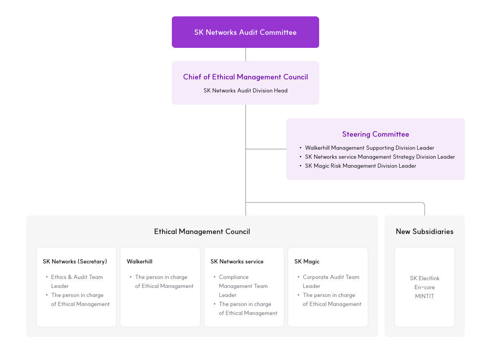

- Chief of Ethical Management Council : SK Networks Audit Division Head
- Steering Committee : Walkerhill Management Supporting Division Leader, SK Networks service Management Strategy Division Leader, SK Magic Risk Management Division Leader
- Ethical Management Council
- SK Networks (Secretary) : Ethics & Audit Team Leader, The person in charge of Ethical Management
- Walkerhill : The person in charge of Ethical Management
- SK Networks service : Compliance Management Team Leader, The person in charge of Ethical Management
- SK Magic : Corporate Audit Team Leader, The person in charge of Ethical Management
- New Subsidiaries : SK Electlink, En-core, MINTIT
SK Networks takes not only its economic and legal responsibilities seriously, but also ethical responsibility is vital in its management processes. By establishing a fair and transparent corporate culture, we aim to earn the trust of our stakeholders and contribute to the happiness of society as a whole through the continuous growth and development of the company. In this regard, SK Networks established and released the Code of Ethics in 2007, based on SKMS, SK's management philosophy. The Code provides employees with directions on proper behaviors and judgement and requests suppliers to understand and comply with the Code of Ethics.
Ethical Management System
To fulfill its ethical responsibilities and to enhance stakeholders' trust, SK Networks is striving to foster a fair, transparent corporate culture by establishing an ethical management system consisting of 3Cs (Code, Compliance, and Consensus). Our Internal Audit Division, an organization in charge of ethical management, operates the ethical management system and runs various systems and programs to establish and spread the ethics culture.

-
Code of Ethics
Code of Ethics Practice Guideline
FAQs on the Code of Ethics
Practice Guidelines -
Exclusive organization for ethical management (Internal Audit Division)
Reporting channel and Whistleblower protection
Self-monitoring & correction system -
Ethics training
Ethics practice workshop
Ethics practice surveys
Ethics Management Practice Pledge
Ethical Management Targets and Roadmap
SK Networks vows to establish an ethical management system living up to global expectations and empowering the ethical management systems of its subsidiaries and suppliers as well. To that end, SK Networks defines and tries to accomplish the following targets regarding ethical management policy and training.
2024 ~ 2025
Upgrade the ethical
management system to
global standards
Policy
- Disseminate and support ISO 37001 certification across subsidiaries
- Establish ethical management control standards for subsidiaries
Training
- Develop/Implement ethical education and anti-corruption training content reflecting organizational characteristics
- Expand ethical education content for suppliers
2026 ~ 2027
Spread the ethical
management system to
global standards
Policy
- Stabilize/Disseminate ISO 37001 certification across subsidiaries
- Increase the coverage of ethical management control targets across subsidiaries
Training
- Continue developing ethical education content to reflect changes in the business environment
- Implement pilot training programs tailored to each target (leader/member)
- Provide support for developing ethical education content to reflect the characteristics of subsidiaries
2028 ~
Ensure the ethical
management system at
the global top-level
Policy
- Maintain ISO 37001 certification for the head office and subsidiaries and evaluate expanding the certification scope
- Improve the quality of ethical management control for subsidiaries
Training
- Update education content for ethical education and anti-corruption training
- Establish an education system tailored to each target
- Continue supplementing/improving ethical education content for suppliers
- Provide support for improving ethical education content to reflect the characteristics of subsidiaries
Code
SK Networks developed in 2007 a code of ethics modeled from SKMS (SK Management System) epitomizing SK Group’s management philosophy and has continued to update it ever since. The code of ethics contains provisions governing good practices and decisions to be upheld by SK Networks people in terms of customer relations, basic employee ethics, accountability to shareholders, relations with business partners, and roles to play in favor of the society at large. In addition, SK network has rolled out a guideline for ethical practices to ensure that the code of ethics is correctly understood and complied with as intended. The guideline for ethical practices spells out practices to be upheld by SK Networks people in terms of anti-corruption, mutual respect, protection of corporate and customer data, avoidance of conflict of interest, arm’s-length transaction, safety/environment/health responsibilities, obligations to report irregularities and protect whistleblowers among others In particular, the guideline contains a series of provisions to monitor and eliminate non-compliance of anti-corruption laws including the Improper Solicitation and Graft Act (Anti-graft Act in short). The code of ethics and the guideline for ethical practices are shared with not only SK Networks people but also business partners, with ethical practice training programs provided and compliance agreements from them required. Furthermore, SK Networks had its anti-corruption management system certified (ISO 37001) in December, 2022 to promote ethical compliance, vowing to bolster up ethical practices ever more.
Compliance
Organization of the Ethical Management Council

SK Networks Audit Committee
Operating the Ethical Management Council
Since 2018, SK Networks has operated the Ethical Management Council chaired by the CEO of SK Networks, with the purpose of building a system for the effective execution of ethical management activities between the head office and subsidiaries and advancing the level of practice. Starting in 2024, the Ethical Management Council has been reorganized into the SK Networks Audit Committee to follow the Board-centered management policy and enhance execution ability. In addition, the head of the Internal Audit Division became the head of the Ethical Management Council, and the organization has been reorganized with ethical management team leaders of each company and persons in charge of ethical management. The Ethical Management Council plans and implements education on ethical management and workshops on ethical practice through quarterly operations, and carries out various activities such as establishing ethics regulations for each company, performing audits, supporting investigations of matters reported, and strengthening the capabilities of persons in charge of ethical management. We classify subsidiaries incorporated within 5 years as new subsidiaries and support basic education and establishment/revision of regulations twice a year so that they can secure an ethical management foundation early. As such, we are managing ethics in a two-track manner with the Ethical Management Council. SK Networks will continue to enhance the independent ethics management functions of each subsidiary through the activities of the Ethical Management Council.
자정시스템 운영
SK네트웍스는 자율적인 윤리경영 실천력을 높이기 위해 업무 영역별 윤리 리스크에 대한 체크리스트를 구성하여 연 1회 자체 점검을 실시하고 있습니다.
체크리스트는 HR 관리, 비용 관리, 구매/비즈니스 파트너 관리, 매출/채권관리, 투자관리 체계, 재고관리, 특이 리스크 관리 등 다양한 영역에서 업무별 특성에 맞는 위험을 점검하고 평가할 수 있도록 구성되어 있습니다.
Ethical Management Reporting Channels


Address
SK Networks Internal Audit Team, 85, Cheonggyecheon-ro, Jongno-gu, Seoul, 03190, Republic of Korea
Consensus
-
Ethics Education Policy
SK Networks provides ethics education annually to its people including contractors and part- timers, aiming to ensure that all of them attend and finish the ethics education programs. A separate ethics education program has been available for management leaders and board members since September 2021, with another ethics education program intended for business partners rolled out from 2022 to boost awareness of ethical management practices. The ethics education programs cover major ethical management issues in SK Networks, including anti-corruption, office bullying, and work ethics. We also survey the ethics education program takers on the effectiveness, difficulty and logistics of the education programs to inform our efforts to improve the programs and contents of feedback from SKN people. SK Networks also plan to upgrade the ethics education programs for management leaders, board members and business partners annually in quantitative/qualitative terms in line with the rapidly changing business landscape both at home and abroad.

 Ethics Training History
Ethics Training HistoryThe table provides results of ethics training and consists of categories (SK Networks and its subsidiaries and partners), 2019, 2020, 2021, 2022, and 2023. Category 2019 2020 2021 2022 2023 SK Networks, subsidiaries, and second-tier subsidiaries* No. of employees completed training (Unit : person)** 4,635 4,922 4,866 4,913 4,862 Percentage of employees completed training (Unit : %) 98.4 97.8 98.5 99.2 99.4 Partner companies*** Implementation (Unit : Y/N) N N N Y Y No. of partner companies completed training (Unit : number) 32 19 * From 2019 to 2021, ethics training has been implemented in six companies (SK Networks (incl. Walkerhill), SK Networks service, SK Magic, SK Magic service, SK Rent-a-car, SK Rent-a-car service). The training was expanded to eight companies (the existing six companies + MINTIT and Cartini starting in 2022.
** Independent directors and non-regular employees were included from 2022.
*** Business partners in direct transactions with SK Networks headquarters have been subject to a pilot ethics training program since 2022. -
Ethics Practice Survey
SK Networks conducts an Ethics Practice Survey for employees at the headquarters and its subsidiaries to assess compliance with the Code of Ethics and the level of ethical practice culture. Ethical management for employees is supported by handling critical implications from survey results, including mutual ethics among employees, inspection of SV-degrading elements, and continuous improvement of the ethical management practice system.

 Ethics Practice Survey History
Ethics Practice Survey HistoryThe table provides the results of the Ethics Practice Survey and consists of categories (SK Networks and its subsidiaries/subsidiaries), 2019, 2020, 2021, 2022, and 2023. Category 2019 2020 2021 2022 2023 SK Networks, subsidiaries, and second-tier subsidiaries* No. of participating employees (Unit : person) 3,705 3,537 4,125 3,985 3,963 Percentage of participating employees (Unit : %) 76.0 68.8 82.1 79.7 81.8 * From 2019 to 2021, the Ethics Practice Survey has been implemented in six companies (SK Networks (incl. Walkerhill), SK Networks service, SK Magic, SK Magic service, SK Rent-a-car, SK Rent-a-car service). The Survey was expanded to eight companies (the existing six companies + MINTIT and Cartini starting in 2022.
-
Ethics Management Practice Pledge
On the first business day of each year, all employees are encouraged to participate in the Ethics Practice Pledge. Along with the employees’ voluntary actions, we aim to enhance awareness of ethical management and establish a transparent corporate culture.


-
Ethics Practice Workshop
Each year, SK Networks holds an Ethics Practice Workshop for all employees to elevate the level of their ethical management. During the Ethics Practice Workshop, participants watch videos or have discussions after reviewing pre-distributed materials related to ethical issues such as workplace bullying and conflict of interest at work, followed by sharing areas of improvement for practicing ethical management. In addition, organizations are selected and awarded the Ethics Management Workshop Excellence to internalize the ethical practice culture in each company, including subsidiaries.

 Ethics Practice Workshop History
Ethics Practice Workshop HistoryThe table provides the implementation results of the ethical management practice workshop and consists of categories (SK Networks and its subsidiaries/subsidiaries), 2019, 2020, 2021, 2022, and 2023. Category 2019 2020 2021 2022 2023 SK Networks, subsidiaries, and second-tier subsidiaries* No. of participating organizations (Unit : number) 414 393 549 419 393 Percentage of participating organizations (Unit : %) 95 98 98 98 99.8 * From 2019 to 2021, the Ethics Practice Survey has been implemented in six companies (SK Networks (incl. Walkerhill), SK Networks service, SK Magic, SK Magic service, SK Rent-a-car, SK Rent-a-car service). The Survey was expanded to eight companies (the existing six companies + MINTIT and Cartini starting in 2022.
Internal Audit
SK Networks conducts internal audits comprising routine audits, compliance checks, voluntary inspections, and investigations into ethical violations. To conduct its routine audit, SK Networks annually develops and evaluates a risk pool encompassing all of its business sites, subsidiaries and supporting organizations at home and abroad. This process reflects measurement and diagnosis results from SK Group and third-party institutions, risk check findings conducted through the voluntary inspection system and ethical practice surveys. Subsequently, an annual routine audit plan is developed for businesses and organizations identified as having high risks, with audit targets being finalized upon reporting to and approval by the Audit Committee. Furthermore, beyond mere audit execution, we systematically monitor compliance with recommendations and regularly report our findings to the Audit Committee to ensure adherence to applicable guidelines. Throughout the routine audit, we assess and enhance the effectiveness of governance structure, risk management, and control processes to assist the Company in meeting its business targets. Additionally, we inspect unethical issues as they arise.
The voluntary inspection system was established in 2011 with the aim of creating risk inspection manuals for each business area and conducting annual inspection of all SK Networks’ businesses and supporting organizations. Updated annually, these manuals are configured to assess and evaluate risks specific to each business area, including HR management, cost management, procurement/business partner management, revenue/credit management, investment management system, inventory management, extraordinary risk management. The scope of the inspection encompasses not only financial risks in each area but also scenarios that may be linked to unethical issues. These include situations such as solicitation of employment, unethical issues that could arise from businesses or positions competing with the Company, moral hazards related to the abuse or misuse of the Company properties by executives or employees, self-approval of expenditures by individuals with authority, illegal fund expenditures, and violation of procurement policy. High-risk items identified during the voluntary inspection process are directly examined by the Audit Office, which also verifies the adequacy of the voluntary inspection results and evidence provided by all businesses and supporting organizations.
SK Networks, along with all its subsidiaries, operate a range of ethical reporting channels both online and offline, including website, face-to-face counseling, and mailing services. Counseling requests and informant reports are managed with transparency and fairness in accordance with established reporting procedures. Customer complaints regarding services are directed to the relevant business units, while all other informant reports, including unethical issues, are directly investigated by the Audit Office. *Reports concerning subsidiaries are investigated in cooperation with the applicable subsidiary.
SK Networks conducts internal audits of all domestic and international business sites and subsidiaries, regularly reporting audit findings to the Audit Committee. Depending on the inspection results, opportunities for improvement are integrated into management activities, and corrective actions are promptly taken upon discovery of violations. In addition, comprehensive response strategies are developed and implemented in consultation with relevant departments as necessary. In 2023, violations of internal control guidelines were identified in areas such as information protection (document security) and inappropriate business handling, leading to corrective actions and process improvement. The Audit Committee also received reports on findings and results of corrective actions for each quarter. At the same time, violation findings and action results are communicated enterprise-wide and incorporated into internal ethical management program materials including ethics education and ethical practice workshop to prevent the recurrence of identical issues.
1) MSCI (Morgan Stanley Capital International): a global assessment firm organized by Morgan Stanley that has assessed companies on 35 ESG elements and released assessment reports since 2009.
2) All businesses of SK Networks’ head office and subsidiaries from 2020 to 2022 have been fully audited (excluding Mintit and Cartini that are still in early days of business and are not two years old in full as of the end of ‘22).
Activities
| 구분 | 2021 | 2022 | 2023 | ||||||
|---|---|---|---|---|---|---|---|---|---|
| 정기감사/이행점검 | 자정 시스템 점검 | 윤리 제보조사 |
정기감사/이행점검 | 자정 시스템 점검 | 윤리 제보조사 |
정기감사/이행점검 | 자정 시스템 점검 | 윤리 제보조사 |
|
| SK네트웍스 | O | 6건 | O | 14건 | O | 18건 | |||
| 정보통신 | O | O | O | O | O | ||||
| 스피드메이트 | O | O | O | ||||||
| 글로벌 트레이딩 | O | O | O | ||||||
| 글로벌 투자 | O | O | O | O | |||||
| 지원 조직 | O | O | O | O | O | ||||
| 워커힐 | O | O | O | O | |||||
| SK매직 | O | O | 23건 | O | 27건 | O | 16건 | ||
| SK렌터카 | O | O | 26건 | O | 13건 | O | 24건 | ||
| SK네트웍스 서비스 | O | 1건 | O | O | 1건 | O | O | 3건 | |
| 민팃 | N/A | - | O | - | |||||
| 카티니 | N/A | - | O | O | 1건 | ||||
| 윤리 제보조사 합계 | 56건 | 55건 | 62건 | ||||||
* 제보조사 건수는 고객 서비스 불만 접수 내역(해당 사업부서 이관)을 제외한 숫자임
* 민팃, 카티니는 2021년 10월 설립하여, 2022년 7월 자정시스템 점검 시에 ‘분사 후 1년 미만 자회사’임에 따라 점검 대상에서 제외되었으며, 2023년부터 자정시스템 점검 대상으로 포함함
* 최근 3년간 국내외 전 사업장과 자회사 대상 내부감사(정기감사, 이행점검, 자정시스템 점검, 윤리 제보조사 등)를 1회 이상 시행 완료하였으며, 3년간 최소 1회 이상 시행하는 것을 목표로 하고 있음
Fair Trade Compliance Program
SK Networks’ Fair Trade Compliance Program (CP) is an internal compliance system established and operated with the goal of fair trade-related compliance. SK Networks introduced the CP in 2002 and has been presenting CP operation as an agenda for the BOD every year. Through the CP operation, we propose clear and concrete fair trade-related codes to our employees and minimize the risk of legal violations that can occur during business through preventive activities.
Operating Compliance Council
The SK Networks operates a Compliance Council composed of SK Networks and nine first and second-tier subsidiaries (including Walkerhill) to fulfill its social responsibilities regarding compliance management and fair economy, and to enhance the overall compliance level. The Council is operated in three modules: legal, fair trade, and SHE(safety, health and environment), where the participating companies strengthen their capacities to prevent and respond to issues by interactively sharing information about the laws and regulations, lessons learned, and related training
SK Networks Compliance Council
-
 Participants
ParticipantsSK Networks and subsidiaries/ sub-subsidiaries
-
 Modules
ModulesLegal / CR / SHE
-
 Members
Members56
(as of 2023) -
 Key Activities
Key ActivitiesImprovement of compliance sensitivity and response capacity, education and information sharing
Fair Trade Compliance Committee
SK Networks appoints a compliance officer from the BOD and operates an organization dedicated to compliance management. Through the voluntary compliance committee, we are preparing a foundation for compliance by deriving key ethical issues and consequently inspecting the status of fair trade-related compliance for each business, promoting fair economy, enhancing trade transparency, and sharing the key Fair Trade policies with the relevant divisions.

Anti-Corruption Policy
SK Networks has specified and developed the following Anti-Corruption Policy in a bid to ensure sustainable happiness of its people and stakeholders and foster a fair and transparent corporate culture.
- All SK Networks people do not engage in corrupt acts.
- All SK Networks people uphold domestic and international anti-corruption laws as well as corporate regulations/guidelines that are applicable to their business practies.
- SK Networks implements anti-corruption control systems in conformity of global standards and continues to improve anti-corruption controls by monitoring the operation of the control systems.
- SK Networks strictly disciplines its people in a transparent manner when they fail to comply with ethical standards and anti-corruption policies.
- SK Networks guarantees the authority and independence of organizations and individuals responsible for enforcing anti-corruption controls.
- All Members of SK Networks' management leadership spare no support in ensuring the efficient operation of anti-corruption control systems.
CEO & President
Lee, Ho-jeong